Java Basic
安装
|
|
手动安装:
- 下载 a
.tar.gzfrom Oracle (here I will be usingjdk-8u20-linux-x64.tar.gz); - 解压
sudo mv /path/to/jdk1.8.0_20 /usr/lib/jvm/oracle_jdk8- Before addin this jdk as an alternative, you can see that the new alternative is not listed:
|
|
- Next, add the new jdk alternatives (2000 is the priority and feel free to pick a different number):
|
|
- Now you should see the new jdk listed and you can switch between the alternatives with this command:
|
|
安装完成后记得，导出 Java 常用命令的路径到环境变量 PATH 中:
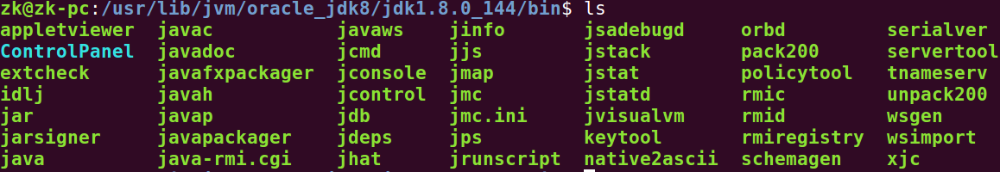
|
|
如何获取源代码
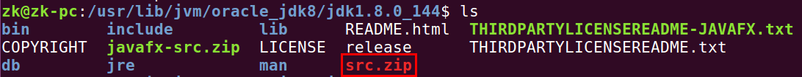
然而这部分代码不包含 rt.jar 的源码
Java Enum
(1) Java 枚举内部可以放置静态方法:
|
|
Java 排序
关于 Comparable<T> 接口: Returns a 负数, 0, 正数 as this object is 小于, 等于, 大于 the specified object. 默认是按照 Sorts the specified list into 升序排列:
|
|
Java Operate Time
- How to parse date
- 如何加减时间
字符串转为 java.util.Date 对象:
|
|
Java 8 字符串转为 java.util.Date 对象:
If you happen to be on Java 8 already, then use DateTimeFormatter (also here, click the link to see all predefined formatters and available format patterns; the tutorial is available here).
|
|
如何将 LocalDate 转为 Date:
|
|
如何将 java.sql.Time 转为 millseconds:
|
|
如何 millseconds 创建 java.sql.Time:
|
|
java.util.Date 对象格式化为字符串:
|
|
Note the importance of explicit Locale argument. If you omit it, then it will use the default locale which is not necessarily English as used in the month name of the input string. If the locale doesn’t match with the input string, then you would confusingly get a java.text.ParseException even though when the format pattern seems valid.
时间戳转为 java.util.Date:
|
|
时间加减:
|
|
这个构造 LocalDateTime 的时候，必须使用参数 Clock.systemUTC()，否则算出来的时间是错误的:
|
|
LocalDateTime 转为 java.util.Date:
|
|
java.util.Date 转为 LocalDateTime:
|
|
格式化模式:
|
|
SimpleDateFormat 示例:
|
|
Important note is that SimpleDateFormat is 非线程安全. In other words, you should 永远不要 declare and assign it as a 静态 or 实例变量 and then reuse from different methods/threads. You should always create it brand new within the method local scope.
根据 The main API for dates, times, instants, and durations，定义在 java.time 包下面的所有类都是 immutable and thread-safe 的。
- 格林威治标准时间
GMT
十七世纪，格林威治皇家天文台为了海上霸权的扩张计划而进行天体观测。1675年旧皇家观测所(Old Royal Observatory) 正式成立，到了1884年决定以通过格林威治的子午线作为划分地球东西两半球的经度零度。观测所门口墙上有一个标志24小时的时钟，显示当下的时间，对全球而言，这里所设定的时间是世界时间参考点，全球都以格林威治的时间作为标准来设定时间，这就是我们耳熟能详的「格林威治标准时间」(Greenwich Mean Time，简称G.M.T.)的由来，标示在手表上，则代表此表具有两地时间功能，也就是同时可以显示原居地和另一个国度的时间。
- 世界协调时间
UTC:
多数的两地时间表都以 GMT 来表示，但也有些两地时间表上看不到 GMT 字样，出现的反而是 UTC 这3个英文字母，究竟何谓 UTC？事实上，UTC指的是Coordinated Universal Time－ 世界协调时间（又称世界标准时间、世界统一时间），是经过平均太阳时(以格林威治时间GMT为准)、地轴运动修正后的新时标以及以「秒」为单位的国际原子时所综合精算而成的时间，计算过程相当严谨精密，因此若以「世界标准时间」的角度来说，UTC比GMT来得更加精准。其误差值必须保持在0.9秒以内，若大于0.9秒则由位于巴黎的国际地球自转事务中央局发布闰秒，使UTC与地球自转周期一致。所以基本上UTC的本质强调的是比GMT更为精确的世界时间标准，不过对于现行表款来说，GMT与UTC的功能与精确度是没有差别的。
通过下面这样获取的时间比真实的北京时间慢 8 个小时:
|
|
GMT 是中央时区,北京在东8区,相差8个小时:
|
|
RocketMQ 的 logback 日志的时间戳配置:
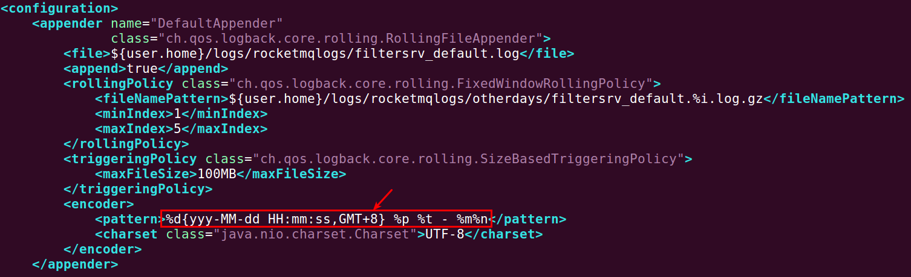
Java 正则表达式
查找并替换:
|
|
如何找到匹配的字符串:
假设原来的字符串 (即使没有括号) 为: http://down6.apk8.com:8020/qu/星座运程-求签测字[www.apkxyx.com].apk，那么用如下代码运行后:
|
|
matched 的值依次是:
星座运程求签测字[]
Mastering Lookahead and Lookbehind
| Lookaround | Name | What it Does |
|---|---|---|
(?=foo) |
Lookahead | Asserts that what immediately follows the current position in the string is foo |
(?<=foo) |
Lookbehind | Asserts that what immediately precedes the current position in the string is foo |
(?!foo) |
Negative Lookahead | Asserts that what immediately follows the current position in the string is not foo |
(?<!foo) |
Negative Lookbehind | Asserts that what immediately precedes the current position in the string is not foo |
查找匹配的 Group:
|
|
输出:
|
|
group(0): 总是匹配整个正则表达式能覆盖的所有区域
Capturing groups are indexed from left to right, 从 1 开始. Group zero denotes the entire pattern, so the expression m.group(0) is equivalent to m.group().
参考: Java Regex Capturing Groups
Predefined character classes:
| 正则表达式 | 含义 |
|---|---|
. |
Any character (may or may not match line terminators) |
\d |
A digit: [0-9] |
\D |
A non-digit: [^0-9] |
\s |
A whitespace character: [ \t\n\x0B\f\r] |
\S |
A non-whitespace character: [^\s] |
\w |
A word character: [a-zA-Z_0-9] |
\W |
A non-word character: [^\w] |
Character classes:
| 正则表达式 | 含义 |
|---|---|
| [abc] | a, b, or c (simple class) |
| [\^abc] | 除了 a, b, or c 之外的任何字符 (negation) |
| [a-zA-Z] | a through z or A through Z, inclusive (range) |
Greedy quantifiers:
| 正则表达式 | 含义 |
|---|---|
| X{n} | X, exactly n times |
| X{n,} | X, at least n times |
| X{n,m} | X, at least n but not more than m times |
正则表达式如下这样写，是可以正确匹配的:
|
|
贪婪非贪婪 (直接写 .* 的话，就是贪婪匹配):
|
|
\ is special character in regex (used for instance to create \d - character class representing digits). To make regex treat \ as normal character you need to place 另外一个 \ before it to turn off its special meaning (you need to escape it). So regex which we are trying to create is \\.
But to create string representing \\ so you could pass it to regex engine you need to write it as 四个 \ (“\\“), because \ is also special character in String (it can be used for instance as \t to represent tabulator) so you also need to escape both \ there.
将 http:\/\/chelpus.defcon5.biz\/LuckyPatcher.apk 中的反斜杠替换为空字符串：
|
|
最终结果为: http://chelpus.defcon5.biz/LuckyPatcher.apk
但是如果你 不想用正则 替换的话，那么可以写:
|
|
也能达到相同的效果。
Java Special MetaCharacters:
|
|
|
|
Java Properties
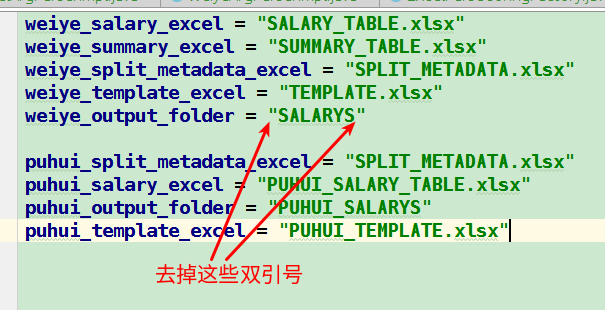
indexOf
|
|
index 的值是指向的 d，而不是 f 的下标:
|
|
Java 异常
红颜色 are checked exceptions. Any checked exceptions that may be thrown in a method must either 被捕获 or declared in the method’s throws clause. Checked exceptions must be caught 在编译阶段. Checked exceptions are so called because both the Java compiler and the Java virtual machine check to make sure this rule is obeyed. 绿颜色 are uncheck exceptions. They are exceptions that are not expected to be recovered, such as null pointer, divide by 0, etc.
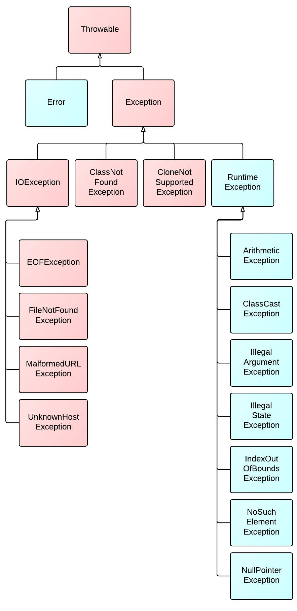
(1) 空指针异常:
|
|
|
|
这句话当 obj.getStatus() 返回 null 的时候，会直接抛出空指针异常
(2) Java Doc 注释异常:

Maven 或者 Gradle 在编译这样的代码的时候，也有可能报异常，因此在 Refactor 代码的时候，最好采用 Intellij Idea 编译器本身自带的 Refactor 功能来进行代码的重构与优化，避免出现此类错误。
(3) Java Content-Type 判断错误:
仅在 Ubuntu 系统下用 Chrome 浏览器上传 APK 文件，然后服务器这边获取到了 APK 文件的 Content-Type，就仅通过下面这句代码来判断是否是 APK 文件:
|
|
最终出现的状况就是，在 Windows 和在 Mac 操作系统上，APK 文件都被判断为非 APK 文件了:
|
|
同样的问题也出现在，做的单页面网站在 Windows 操作系统下，使用 IE 内核出现各种意想不到的错误与问题。
Return from Finally
下面代码结构的 finally 依然会执行:
|
|
Java 较旧的版本安装的问题
下载 Java 较为旧的版本，官网一般会提供一种叫做 .bin 格式的文件:
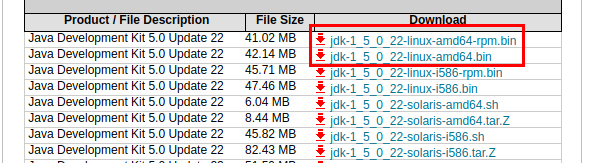
参考 JDK Self-Extracting Installation for Linux (64-bit)，其实这种文件的解压很简单，执行下面这些命令就可以进行解压到旁边的文件夹了:
|
|
自定义 Exception 的写法
一定要记得定义 serialVersionUID:
|
|
为什么一定要定义 serialVersionUID，其实就是因为基类实现了这个接口，语言就是这么设计的，作者可能想要能够让这些异常信息在网络上传输:
|
|
反射
注解
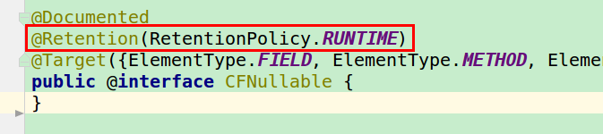
RetentionPolicy.SOURCE: Discard during the compile. These annotations don’t make any sense after the compile has completed, so they aren’t written to the bytecode. Example:@Override,@SuppressWarningsRetentionPolicy.CLASS: Discard during class load. Useful when doing bytecode-level post-processing. Somewhat surprisingly, this is the default. Appear in the decompiled class, but can’t be inspected at run-time with reflection withgetAnnotations().RetentionPolicy.RUNTIME: Do not discard. The annotation should be available for reflection at runtime. Example:@Deprecated. Appear in the decompiled class, and can be inspected at run-time with reflection withgetAnnotations().
Language level:
|
|
Bytecode level: using javap we observe that the Retention.CLASS annotated class gets a RuntimeInvisible class attribute:
|
|
while Retention.RUNTIME annotation gets a RuntimeVisible class attribute:
|
|
and the Runtime.SOURCE annotated .class does not get any annotation.
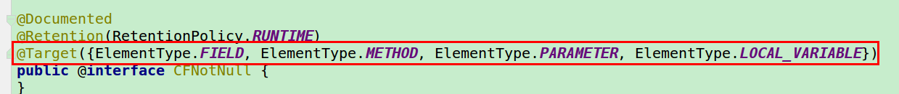
可选 ElementType 类型如下:
|
|
避免无限循环阻塞下面代码的执行
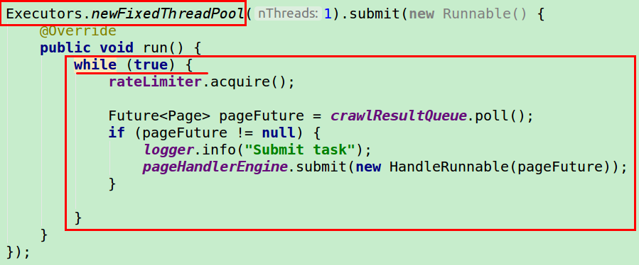
如图，如果 while(true) 直接写在外面，那么下面的的代码不在执行，必须放在一个新的线程中才能执行。
定时提交任务
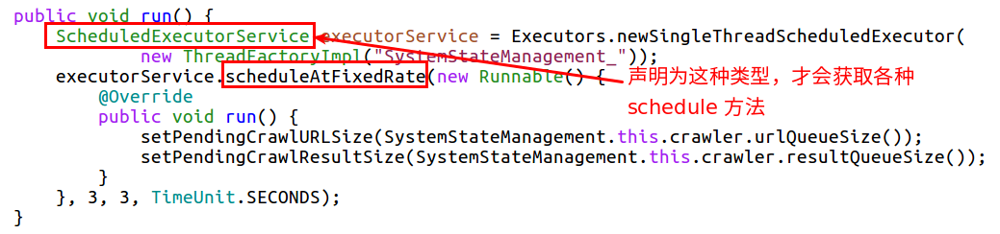
URI 各部分字段的值
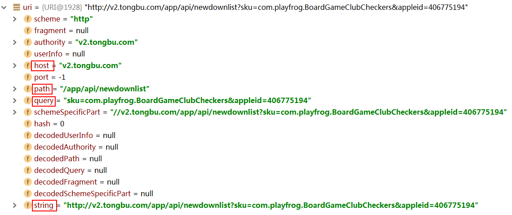
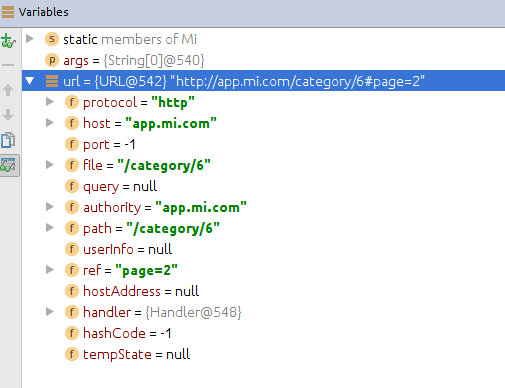
Java 8
List 中的所有字符串调用 trim 方法:
|
|
什么叫做 Function Interface:

原来的匿名类怎么写:
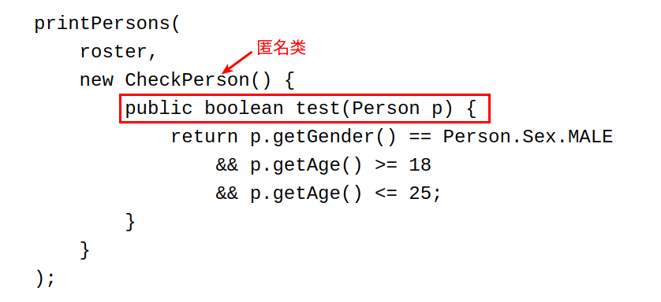
匿名类转为lambda写法:
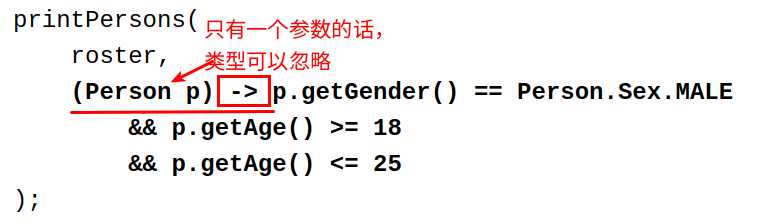
java.util.function 下面为你定义好了一些能够直接使用的 Function Interface，比如上面的接口就可以使用 Predicate 来代替:
|
|
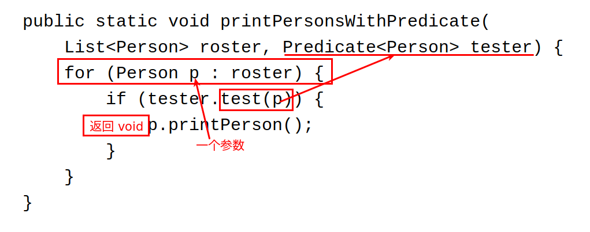
接受一个参数，然后在这个参数上执行某些行为最后返回一个 void ，可以使用 Consumer<T> 接口的 accept(T t) 方法:
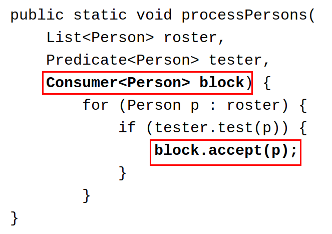
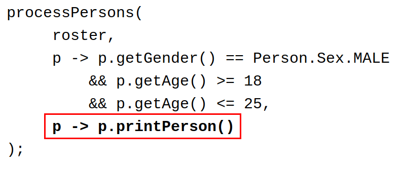
返回一个参数，可以使用 Function<T, R> 接口提供的 R apply<T t> 方法:
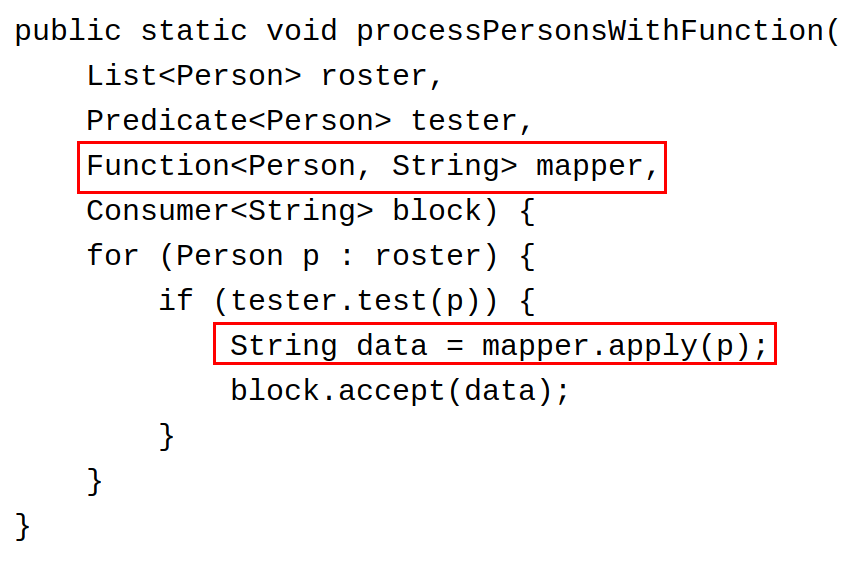
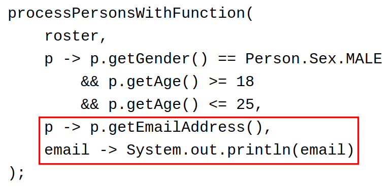
Aggregate Operations:
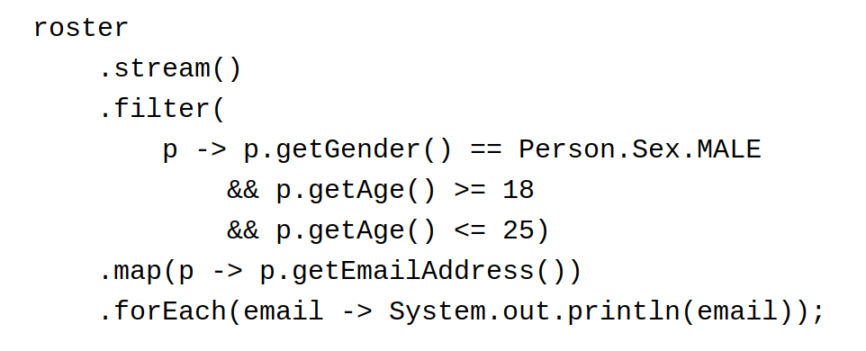
函数意义:
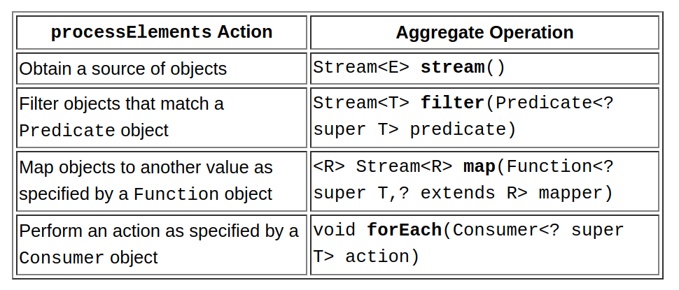
注意: 在 filter 方法中有异常情况的抛出:
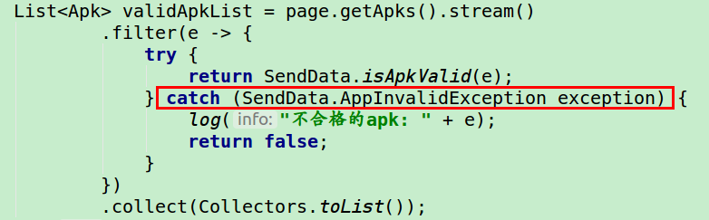
如果没有 catch 的话，程序会阻塞在这里。
DataOutputStream vs ObjectOutputStream
处理基本类型的时候，这两个没有任何区别。
DataOutputStream and ObjectOutputStream: when handling basic types, there is no difference apart from the header that ObjectOutputStream creates.
With the ObjectOutputStream class, instances of a class that implements Serializable can be written to the output stream, and can be read back with ObjectInputStream.
java.sql.Connection
在 auto-commit 模式下，执行 rollback() 会抛出 SQLException 异常:
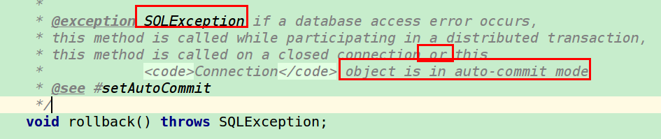
读取用户输入
|
|
ServiceLoader
因为其实现了 Iterable 接口:
|
|
所以我们可遍历:
|
|
读取配置文件
从 jar 的同级目录读取:
|
|
|
|
Iterable
ArrayList 实现了 Iterable 接口:
|
|
所以可以这样 for-each-loop 遍历:
|
|
A class has to implement the Iterable interface if it wants to have a for-each loop to iterate over its collection. However, the for-each loop can only be used to cycle through the collection in the forward direction and 不能修改元素 in this collection. But, if all you want is to 读取 the elements data, then it’s very simple and thanks to Java lambda expression it’s often one liner. For example:
|
|
Iterator:
This interface enables you to iterate over a collection, 获取和删除 its elements. Each of the collection classes provides a iterator() method that returns an iterator to the start of the collection. The advantage of this interface over iterable is that with this interface you can add, modify or remove elements in a collection. But, accessing elements needs a little more code than iterable. For example:
|
|
组合和聚合
Composition:
|
|
Aggregation:
|
|
Both Composition and Aggregation are Associations. Composition -> Strong Has-A relationship Aggregation -> Weak Has-A relationship.
Invalid signature file” when attempting to run a .jar
从 jar 包里面删除这 3 个文件即可:
|
|
System.getenv() & System.getProperty()
getenv gets an environment variable. getProperty gets a Java property. Environment variables are specified at the OS level. Java properties are specified by passing the -D option to the JVM (and can be set programmatically).
|
|
请求网站
|
|
An InetAddress corresponds to the Network Layer (网络层) (Layer 3) and is basically an IP address (IP 地址).
A InetSocketAddress corresponds to the Transport Layer (传输层) (Layer 4) and consists of an IP address and a port number.
|
|
Java 安全模型简介
当前最新的安全机制实现，则引入了域 (Domain) 的概念。虚拟机会把所有代码加载到不同的系统域和应用域，系统域部分专门负责与关键资源进行交互，而各个应用域部分则通过系统域的部分代理来对各种需要的资源进行访问。虚拟机中不同的受保护域 (Protected Domain)，对应不一样的权限 (Permission)。存在于不同域中的类文件就具有了当前域的全部权限:
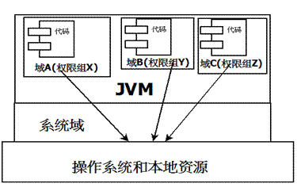
doPrivileged 方法能够使一段受信任代码获得更大的权限，甚至比调用它的应用程序还要多，可做到临时访问更多的资源。有时候这是非常必要的，可以应付一些特殊的应用场景。例如，应用程序可能无法直接访问某些系统资源，但这样的应用程序必须得到这些资源才能够完成功能。针对这种情况，Java SDK 给域提供了 doPrivileged 方法，让程序突破当前域权限限制，临时扩大访问权限。
在 Eclipse 开发环境中建立两个不同工程：projectX 和 projectY。我们会给 projectX 工程中的 bin 目录赋予写文件的权限，换句话说就是允许所有存在于此目录中的 class 文件可以自由的在 bin 目录中进行文件写操作。然后，我们会在 projectY 工程中调用 projectX 工程中的一个文件操作工具类。这个工具类提供两种类型接口，一种是特权访问方式，另外一种是普通访问方式。由于在 projectY 工程中的文件是不具备在 projectX 工程中 bin 目录的任何写权限，所以通过三种不同访问方式的调用结果，我们就可以很清楚地了解到 Java 中安全控制该如何使用。
|
|
当如果想往 projectX 工程中创建文件的时候，只有调用 doPrivilegedAction 才可以创建成功，其它方法均会报无权限。注意，可能需要提前打开一个开关:
|
|
什么时候应该使用 doPriveleged:
There are lot of operations in Java that require the caller domain (域) to have certain permissions (权限) for successful execution of those operations. System.getProperty is one of those operations. All file related operations (所有文件操作) also need special permissions. When you use AccessController.doPrivileged to invoke those operations, the operation is executed with all the rights(permissions) of your protection domain. Hence if your code has enough rights only then it could execute those operations.
Essentially, AccessController.doPriviledged() is the equivalent of a set-user-id file. It is saying “I hereby request that this method be done with my privileges (我的权限), even if I was invoked by a method that does not have them (即使调用我的那个方法并没有这样的权限).”
JVM 的编码问题
There are three “default” encodings:
file.encoding:
|
|
默认值是 UTF-8，可以在启动 JVM 的时候通过指定参数来改变默认值: java -Dfile.encoding=ASCII com.zk.Main
java.nio.Charset:
|
|
默认实现：
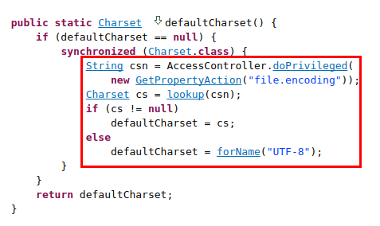
- And the encoding of the
InputStreamReader:
|
|
这个方法的默认编码也是用的 Charset.defaultCharset():
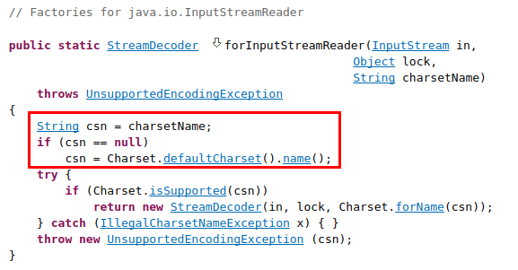
以下是一些实验数据:
| BASH LANG | Dfile.encoding | file.encoding | defaultCharset() |
|---|---|---|---|
ANSI_X3.4-1968 |
US-ASCII |
||
C |
ANSI_X3.4-1968 |
US-ASCII |
|
C.UTF-8 |
UTF-8 |
UTF-8 |
|
C |
UTF-8 |
UTF-8 |
UTF-8 |
en_US.utf8 |
UTF-8 |
UTF-8 |
UTF-8 |
使用命令 locale -a 来查看 BASH LANG 环境变量支持设置的值。
综上，在不设置 -Dfile.encoding 的情况下，UNIX 的 LANG 环境变量对于 JVM 的编码有着直接影响。